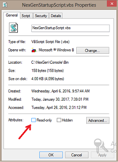
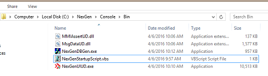
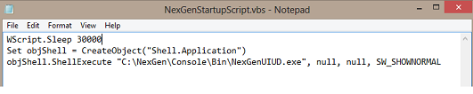
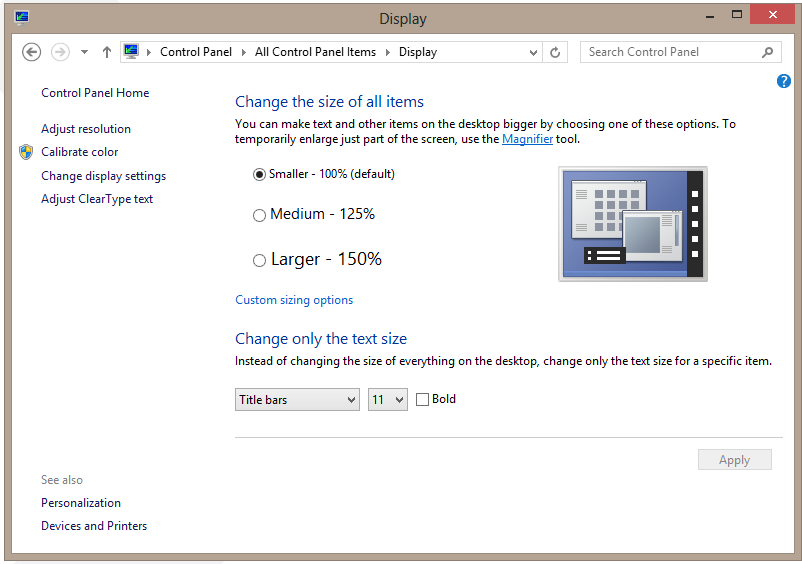
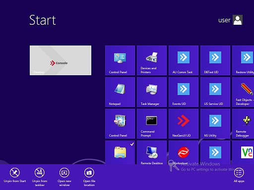
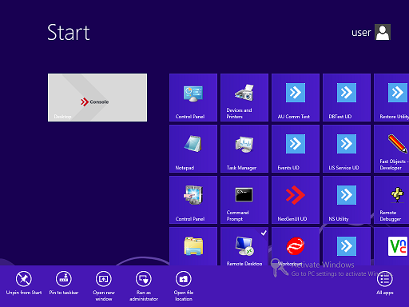

Instrument: Windows 8 Console PC and AU Navigation
This document provides instruction for navigating the DxI Console PC and the AU running Windows 8.
Verify the date and time settings in Windows 8 from the Windows desktop.
Click on the clock at the bottom right corner of the Windows desktop.
In the pop up window select
Change date and time to adjust the time or select
Change time zone to adjust the time zone if needed.
Note: Coordinated Universal Time is the default setting and does not observe Daylight Savings.
When date, time, and time zone have been verified select
OK.
Pinging the AU.
Press
Windows key, open the
Command Prompt icon or type
command prompt and open the program.
In the CMD window, enter ping
192.168.2.4, and then select Enter.
Note: For Windows 8, the default console IP address is 192.168.2.3 and the AU IP address is 192.168.2.4. Neither IP address changes during the software load process.
Verify that the PC receives a reply from the AU.
Note:
If a Destination Host Unreachable message is displayed, then check that the IP address was entered correctly.
For Windows 8 consoles not connected to a working network, an error message of Destination Host Unreachable is generated when pinging any address (even the address of the PC).
If the AU and PC are given the same IP address, then there is a network conflict and no communication occurs. To resolve the conflict, change the PC IP address to 2.1, reboot the instrument and the PC, and then ping addresses 1 to 10 again. Refer to the configuring network settings section of the
Peripherals: Replacing Console PC or PC Hard Drive.
The network connection on the PC is near the mouse connector. The dual NIC ports on the PC are for the RMS and LAS and do not work for the AU connection.
The DxI instrument has two network connectors, identified as PC and UCTA. If unsure of the port, try both, connect to the spare port on the underside of the SPU, or connect directly to the AU hub.
Open a connection between the console PC and the AU.
Press the
Windows key, select the
Remote Desktop Connection icon or type
remote and open the Remote Desktop Connection program.
The remote desktop connects to the instrument computer and allows remote control of the instrument and applications. When connected, the
Remote Desktop window displays the Windows 8 desktop of the instrument.
Type in
192.168.2.4 into the Computer field and select Connect.
Enter
user for User Name and
tech for the password if prompted.
If prompted at the RDS warning screen, check the box for "Don't ask me again for connections to this computer" and select Yes.
Note: For Windows 8, the default console IP address is 192.168.2.3 and the AU IP address is 192.168.2.4. Neither IP address changes during the software load process.
To switch between the console PC display and the AU display:
To return to the console PC display, use the minimize button at the top of the
AU Desktop screen.
To restore the
AU Desktop screen, press the
Windows key, type
remote, and open the Remote Desktop Connection program.
Close the desktop sharing connection.
From the
AU Desktop, right click on
Remote Desktop Connection icon on the upper left corner or on the task bar > Close
or select the
X in the upper right corner.
Select
OK at the
Your remote session will be disconnected pop-up.
Transfer files from AU to console PC.
Minimize the AU desktop and return to console PC desktop.
Map the AU network drive to the console PC.
Press the
Windows key and click the
File Explorer icon to open it.
Right click on
Computer and select
Map Network Drive.
In the Folder window, type
:\\192.168.2.4\c$
Verify the "Reconnect at Sign in" box is checked and select
Finish.
Navigate to a drive (examples:
Local Disk (C:), DVD RW Drive (D:), and
BACKUPDRIVE (E:)) and locate the file to transfer to the mapped AU drive (c$ (\\192.168.2.4)).
Transfer files to AU drive. Example: Transfer the alignment file to AU folder.
Browse to:
BACKUPDRIVE (E:) > Backup folder.
Right click on the
xxxxxx_specific.ini file and select
Copy. The xxxxxx is the serial number of the instrument.
Navigate to the mapped AU drive (c$ (\\192.168.2.4)), right click on the
AU folder, and select
Paste.
Note: If there is no
AU folder, right click on the mapped AU drive (c$(\\192.168.2.4)), select New > Folder and name the new folder
AU. Then paste the
xxxxxx_specific.ini file into the
AU folder. The letter of the mapped network drive is not significant and may vary depending on other drives in use. it commonly shows as (Y:) or (Z:).
Return to the AU desktop screen.
Navigate to
Local Disk (C:) > AU folder and verify the file is transferred over.
Transfer files from console PC to AU.
Open a remote desktop connection to the AU side.
From the AU desktop, double click on
File Explorer on the task bar or
Computer.
Navigate to AU drive
(Local Disk (C:)) and locate the files to be transferred.
Right click on the file and select
Copy.
Navigate to
Network, select
xxxxxxx_PC or
Console_PC > Users.
Note: xxxxxx is the serial number of the instrument.
Right-click in this location, and select
Paste.
Return to the console PC desktop and open
File Explorer or
Computer.
Navigate to
Local Disk (C:) > Users, and verify the file is transferred over.
Change folder options on the AU.
Press
Windows key and select File Explorer.
Navigate to
View > Options, and then select the
Change folder and search options tab.
On
Folder Options box, clik on
View.
Verify that:
Hide extensions for know file types is checked.
Display file icon on thumbnails is checked.
Display the file size information in folder tips is checked.
Show hidden files, folders, and drives is checked.
Hide protected operating system files (Recommended) is unchecked.
Note: Keep the rest of the options as they are.
Select
Apply to All Folders > OK.
Update Registry Settings.
Press the
[Windows] key, type
regedit and open the regedit.exe program.
Right click on
DxIToDxCServerIP and select
Modify.
Enter
134.217.96.184 and select
OK. If using the CTS (closed tube sampling) feature enabling DxC networking then set the IP address as shown.
DxI 1 IP 134.217.96.184
DxI 2 IP 134.217.96.185
DxI 3 IP 134.217.96.186
DxI 4 IP 134.217.96.187
Note: The CTS feature monitors up to four networked DxC instruments and allows a sample tube to be loaded on multiple DxCs while only being pierced once.
Verify that
DxIToDxCDefaultLocalIp is set to
DefaultLocalIp.
Close the Registry Editor.
Verify the IP addresses on the AU and PC.
Open a remote desktop connection to the AU.
Press the
Windows key, type
remote, and open the Remote Desktop Connection program.
Type
192.168.2.4 into the Computer field and select
Connect.
Enter
user for the User Name and
tech for the password if prompted.
If prompted at the RDS warning screen, check the box for "Don't ask me again for connections to this computer" and select Yes.
Note: For
Windows 8, the default console IP address is 192.168.2.3 and the AU IP address is 192.168.2.4. Neither IP address changes during the software load process.
Unplug the network cable for the DxI AU at the DxC hub.
Press the
Windows key, type
network connections, click on
Settings, and select
View Network Connections.
Right click on
Local Area Connection 2, choose
Properties, select
Internet Protocol Version 4 (TCP/IPv4)
and choose
Properties.
Verify these settings for the local area connection. Change as needed.
Select
Use the following IP address
IP address is 134.217.96.188
Subnet Mask is 255.255.255.0
If using the CTS feature on this system, then set the IP address as shown.
DxI 1 IP 134.217.96.188
DxI 2 IP 134.217.96.189
DxI 3 IP 134.217.96.190
DxI 4 IP 134.217.96.191
Note: The IP address entered in this step is the DxI AU address in the DxC network. If the settings are changed, restart the AU for the changes to take effect.
Plug the network cable into the DxC hub, close the
Network Connection window and the remote desktop connection to the AU.
Press the
Windows key, type network connections, click on
Settings, and select
View Network Connections.
Right click on
Local Area Connection 3, choose
Properties, select
Internet Protocol Version 4 (TCP/IPv4) and choose
Properties.
Verify these settings for the Local Area Connection 3. Change as needed.
Select
Use the following IP address
IP address is 134.217.96.184
Subnet Mask is 255.255.255.0
If using the CTS feature on this system, then set the IP address as shown.
DxI 1 IP 134.217.96.184
DxI 2 IP 134.217.96.185
DxI 3 IP 134.217.96.186
DxI 4 IP 134.217.96.187
Note: The IP address entered in this step is the DxI PC address in the DxC network. If the settings are changed, then restart the PC for the changes to take effect.
Close the
Network Connections window.
Modify the startup script to delay the launch of the user interface.
Note: The software startup script must be modified to ensure the serial ports on the Mini PC are functional before the system software tries to use them. Failure to complete the following steps may result in communication failures with the LIS, DxC, or Printer.
Press the
Windows key and select the
File Explorer icon or type
File Explorer and open the program.
Select the
C: drive and navigate to
NexGen > Console > Bin folder.
Right click on the
NexGenStartupScript. vbs file and select
Properties.
Uncheck the
Read-only box, select
Apply then
OK.

Right click on the
NexGenStartupScript. vbs file and select
Edit. Place the cursor at the beginning of the file and press
Enter to insert a row at the top of the file.
Type
WScript.Sleep 30000 into the empty row, then select
File > Save to save the file. Close the file.


Change the display resolution.
Note: Windows 8 may require adjusting the screen resolution or changing display settings to make the user interface appear as a full screen.
Press the
Windows key, type
Display and select
Settings option.
Open the
Change display settings icon.
Change the resolution to
1024 x 768, select
Apply, and
OK.
Note: If the user interface is abnormal (has missing or misaligned display icons), then perform the following steps to return the user interface back to normal.
Press the
Windows key, type
Display and select
Settings option.
Open the
Display icon.
Select
Smaller - 100% (default) and click
Apply.

Note: If the monitor has blank display areas at the top and bottom of the user interface screen, then perform the following steps to eliminate the areas.
Press the
Windows key, type
graphics and open the
Intel HD Graphics Control Panel program.
Select Display and then check the
Scale Full Screen option.
Click
Apply and
OK.
Note: Additional display settings are available in the Intel Graphics program which may resolve display features on Command Central KVM connections.
Navigate to system software applications and windows applications.
Software Applications
NexGenUI UD or NexStepUI UD
AU CommTest
DBTest UD
Restore Utility
Fast Objects - Administrator (the new Poet Objects)
Fast Objects - Developer (the new Poet Objects Developer)
Fast Objects - Server (the new Poet Objects Server)
NS Utility
Events UD
LIS Service UD
Workgroup Service UD
Remote Debugger
VNC Server
Windows Applications
Devices and Printers
Command Prompt
Control Panel
Control Panel (Touchscreen)
File Explorer
Remote Desktop Connection
Task Manager
Press
Windows key to access all the available applications in the
Start
menu.
Select the application and double click to open or launch.
Create application short cuts to console PC desktop or AU desktop from
Start
menu.
Navigate to the application folder or press
Windows key, right click on an application on the
Start menu and select
Open file location.

Right click on the application short cut, select
Sent to > Desktop (create shortcut).
Return to console PC or AU desktop to verify the short cut is created successfully.
Pin the application short cuts from
Start menu to console PC taskbar or AU taskbar.
Press
Windows key, right click on an application on the
Start menu and select
Pin to taskbar.

Return to console PC taskbar or AU taskbar to verify the short cut is created successfully.
Pin the application short cuts to the
Start menu.
Pin
Control Panel
applications to
Start
menu.
Press
Windows key, select the
Control Panel icon or type
control panel
and open the program.
Right click on the application and select
Pin to Start.
Press
Windows key, and verify the short cut is pinned to the Start menu successfully.
Navigate to the application folder and pin application short cuts to
Start menu.
Right click on the application short cut and select
Pin to Start.
Press
Windows key, and verify the short cut is pinned to the Start menu successfully.
Pin application short cuts on the
Desktop to
Start menu.
Right click on the application short cut and select
Pin to Start.
Press
Windows key, and verify the short cut is pinned to the Start menu successfully.
Use Task Manager to view and end specific processes.
Press
[Alt] + [F4], and then enter the password
Access2Support to exit the user interface.
Press
Ctrl + Alt + Delete keys together and select
Task Manager or press
Windows key, type
Task Manager and open the program.
From the Task Manager window, select the Processes tab.
Determine if any of these processes are running in the Task Manager.
NexGenUI MFC Application or NexStepUI MFC Application
AUCommunicator DLL
DbMaintenance DLL
InstrumentModel Module
LISService MFC Application
PostOffice DLL
Reduce MFC Application
Screen TransitionTool MFC Application
Figure 388:
Windows 8 Task Manager: DxI System
For each process that is running, select the process, and then select
End Task.
Close the
Task Manager window.
Change the manufacturing alignments to Not Done.
Open a remote desktop connection to the AU.
Press the
Windows key, type
remote, and open the Remote Desktop Connection program.
Type
192.168.2.4 into the Computer field and select
Connect.
Enter
user for the User Name and
tech for the password if prompted.
If prompted at the RDS warning screen, check the box for "Don't ask me again for connections to this computer" and select
Yes.
Note: For Windows 8, the default console IP address is 192.168.2.3 and the AU IP address is 192.168.2.4. Neither IP address changes during the software load process.
Shut down the AU Object program.
Right click on the task bar and select
Task Manager.
In the
Task Manager box, click on
Processes, select
AUobj Module, and click on
End Task in the bottom corner of the box.
In the AU desktop, find specific.ini file and make a copy of the file.
Double click on
Computer or File Explore and select
Local C: drive or
AU_PC (C:) > AU > specific.ini, right-click on the specific.ini file, and then select
Copy.
Right-click
Local C: Drive or AU_PC(C:), and then select
Paste. A copy of the specific.ini file is placed onAU_PC(C:).
Double-click to open the specific.ini file in the
Local C: Drive or
AU_PC(C:) >> AU folder .
Select
Search > Find, and enter
mfgalignment in the search box. Select
Find Next.
Change Yes to
No , and then save the changes by selecting
File > Save.
Close the specific.ini file and the
Explorer
window.
Double-click the
AUObj.exe icon on the desktop to restart the AU program.
Close the remote desktop connection to the instrument.
Note: The user interface should now say Manufacturing Not Aligned under the
Main Menu or in the
Diagnostics screen.
Reload the USB driver on the AU.
Note: If a pop-up window is displayed on the AU with a the ftdibussys on FTDI USB Drivers Disk is needed message, then:
Verify the USB cable is connected to the correct port on the CPU PCB.
Verify the USB cable is connected to JR1 of the USB encoder interface PCB on the dual-gantry sample pipettor.
Verify the USB controller is enabled in CMOS.
Reload the system software on the AU only or reload the USB driver on the AU.
Select
Computer > Local Disk (C:) or AU_PC (C:) > Windows > System 32 > DRVStore, and then double-click
DPInst.exe. Relaunch the AUObj when complete.
Note: The error indicates that the USB hardware was not found when the drivers were loaded during the software install.
Repairing Windows Logon.
Note: To correct an issue where the PC requests password entry when powered on, perform these steps to repair the Auto Admin Logon feature of the console PC.
Enter the current Windows password (tech) to launch Windows.
Note:
The password should be tech but the operator could have changed the password. In order to change the password, the current password must be known. Replace the PC or replace the PC hard drive to recover from an unknown password.
The tech password configuration also applies to the AU, with the additional symptom of desktop sharing failing to login.
Press
Windows key, type
run and open the program.
Note: If the run box does not appear, recommend exiting the user interface and reopen the run program.
Type in
control userpasswords2 on the open text line and click
OK or hit
Enter.
Un-check mark the
Users must enter a user name and password check box, then select
Apply.
Type in User name:
user, Password:
tech, Confirm Password:
tech, and click
OK to save.
Click
OK to exit.
Reboot the PC.
If the PC continues to request a password at boot-up, then press
Windows key, type
run and open the
run program.
Type in
Regedit
on the open text line and click
OK or hit
Enter.
Browse to
HKEY_LOCAL_MACHINE > SOFTWARE > Microsoft > Windows NT > CurrentVersion > WinLogon in the registry editor.
Right-click on
AutoAdminLogon, select
Modify, and then change the value from 0 to
1.
Ensure that the
DefaultPassword string value is tech. If the
DefaultPassword does not exist, then right-click in the editor window, create a new string, name the string
DefaultPassword, and set the value to
tech.
Rebooting or shutting down the PC or AU using
Command Prompt application.
Rebooting the PC or AU.
Press
Windows key, open
Command Prompt icon or type
command prompt and open the program.
Type
shutdown.exe /r /t 00 and hit
Enter.
Shutting down the PC or AU.
Press
Windows key, open
Command Prompt icon or type
command prompt and open the program.
Type
shutdown.exe /s /t 00 and hit
Enter.
Note: For a complete shut down on the AU, turn off the power on the AU.
Note: When rebooting the Privacy & Security compliant Windows 8 or Windows 10 PC, you must enter security password "Access2Admin" when prompted to launch Windows.
Rebooting or shutting down the PC or AU using Windows 8 Power feature.
Rebooting the PC or AU.
Press
Windows key, type
turn off and select
Settings > Turn off your PC > Power > Restart.
Shutting down the PC or AU.
Press
Windows key, type
turn off and select
Settings > Turn off your PC > Power > Shut down.
Note: For a complete shut down on the AU, turn off the power on the AU.
Note: When rebooting the Privacy & Security compliant Windows 8 or Windows 10 PC, you must enter security password "Access2Admin" when prompted to launch Windows.


 Note: If there is no AU folder, right click on the mapped AU drive (c$(\\192.168.2.4)), select New > Folder and name the new folder AU. Then paste the xxxxxx_specific.ini file into the AU folder. The letter of the mapped network drive is not significant and may vary depending on other drives in use. it commonly shows as (Y:) or (Z:).
Note: If there is no AU folder, right click on the mapped AU drive (c$(\\192.168.2.4)), select New > Folder and name the new folder AU. Then paste the xxxxxx_specific.ini file into the AU folder. The letter of the mapped network drive is not significant and may vary depending on other drives in use. it commonly shows as (Y:) or (Z:). Note: If the user interface is abnormal (has missing or misaligned display icons), then perform the following steps to return the user interface back to normal.
Note: If the user interface is abnormal (has missing or misaligned display icons), then perform the following steps to return the user interface back to normal.